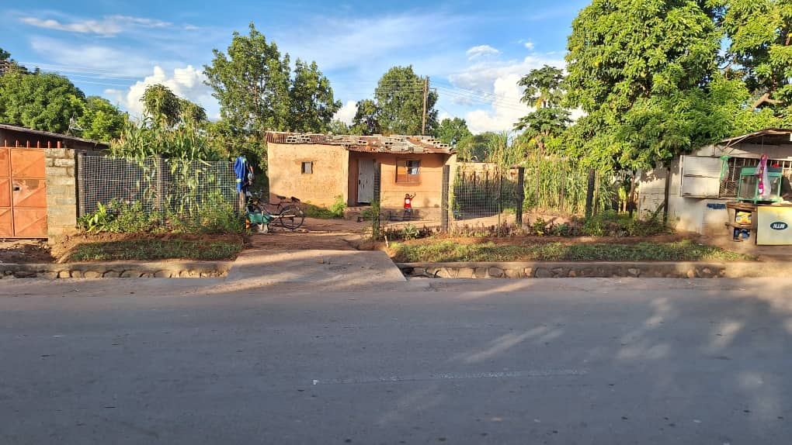
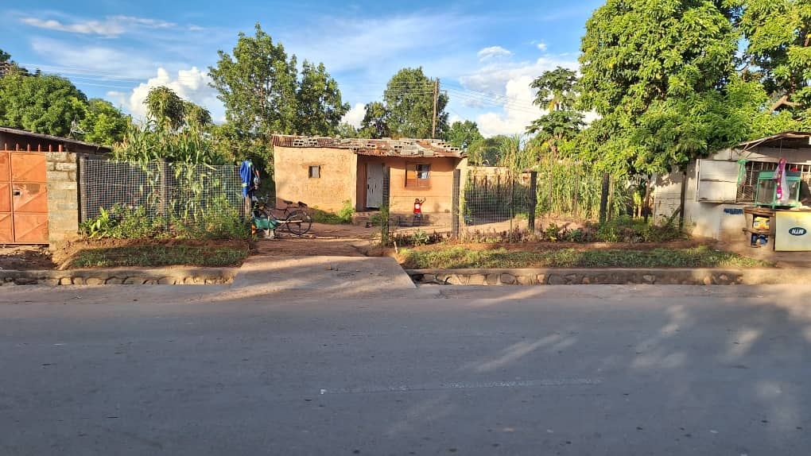

Our Mission
We combat climate change and aspire to see our communities flourishing by enhancing food security and economic
opportunities.
Our mission is not just about cultivating crops and trees; it's about cultivating hope.
We aim to equip our communities with professional agricultural skills and godly principles.
Together, we will not only combat deforestation but also cultivate a brighter, more sustainable future for
generations to come.
Through the love and help of God, we embark on a journey of purpose, determined to establish a commercial farm
with an orphanage, taking care of those who have been forgotten.
This is the journey of TheMulengaFarm. Will you join us?
About Us
Lionel
I'm looking forward to see our culture and societies develop in a more human-looking future, where sense, solidarity, communion, and beauty build their core. I love people and travelling, seeing the Love of God made practical. Starting at the bottom with a shift in agriculture is a fantastic first step into a more grounded world!
Jameson
I'm passionate about my sustainable farming career and I love transforming communities,
especially the less privileged people in society, through skills training.
I have a calling in farming, and I look forward to establishing God's kingdom through
farming God's way. I believe if we look after nature, nature will look after us.
Our Story
We met in Zambia in 2018. Although we only saw each other for 3 days, we have maintained a
fulfilling friendship ever since. Jameson's vision of bringing nature and people together,
building a professional commercial farm and thereby transforming communities and the agricultural
sector has inspired me (Lionel) ever since. It is effective action to contribute to a positive
development and a more human-looking future.
Jameson has been working on various farms since 2017. In doing so, he passes on the knowledge of his
own seed production, the use of compost and reuse as well as organic and natural pest control methods.
In 2024, we spent a month together and implemented the next steps of TheMulengaFarm together.
TheCommunityTraining Centre is currently under construction and the field work and tree nursery
are in full swing. Every week, 3 to 4 friends and neighbors accompany Jameson at work, sharing knowledge,
skills, and faith.
Currently growing: 1500 Citrus-tree (mango, avocado, oranges, lemon, etc.), Maize
(open-pollinated variety, OPV) and all kinds of vegetables, including seed production.
Chili production and poultry (100)
Donate
We look forward to establishing an economically self-sufficient farm by 2035.
Until then we need CHF 3500. —per year to keep the project growing.
Pictures


 

Current Projects
Community Training Center


Farms and Fields


More Images


Even More Images